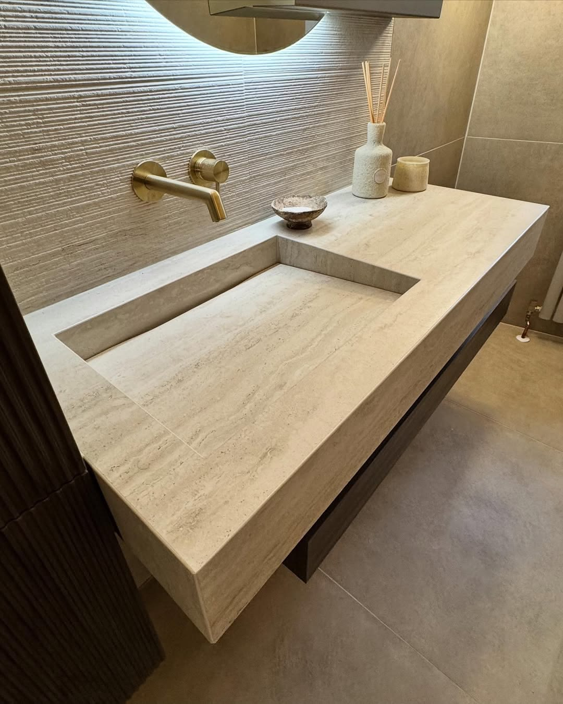
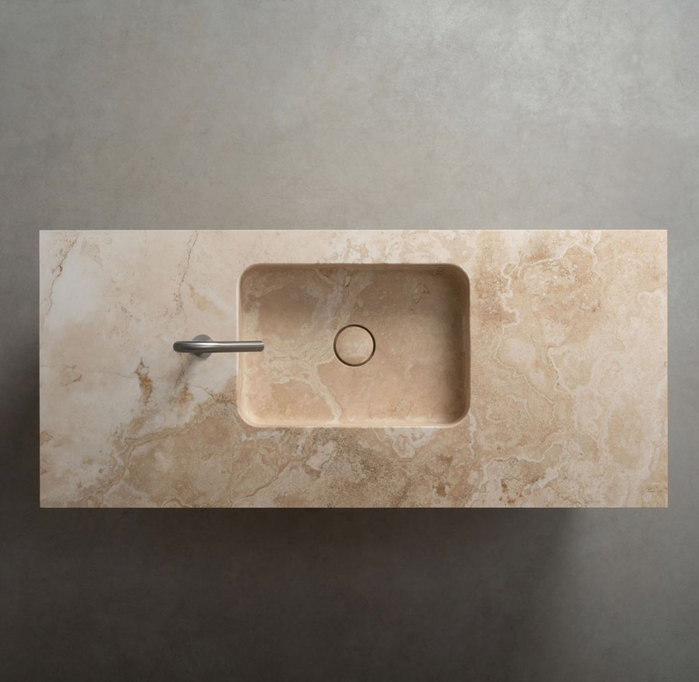
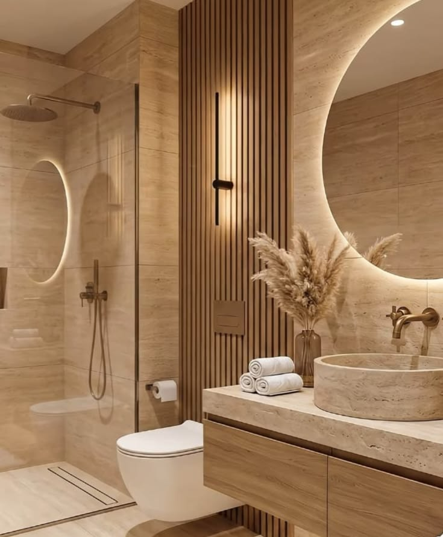
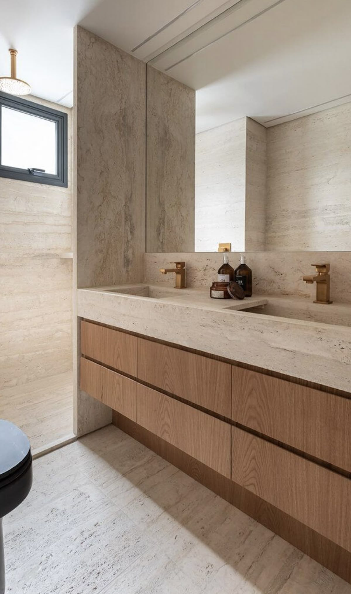

Elegância Histórica e Rústica
O Mármore Travertino é uma rocha calcária formada pela precipitação de carbonato de cálcio em fontes termais, sendo extraído principalmente na região de Tivoli, próximo a Roma, Itália. Utilizado na construção do Coliseu e do Vaticano, ele carrega milênios de história e continua sendo uma referência mundial em arquitetura neoclássica e contemporânea.
Suas cavidades naturais (poros) são a sua assinatura estética. O material pode ser aplicado com os poros abertos (estilo bruto/rústico) ou estucado (onde as cavidades são preenchidas com resina da mesma cor antes do polimento ou levigamento), conferindo uma superfície lisa e uniforme de tons beges e cremes quentes.
Aplicações Recomendadas
Devido à sua versatilidade e estabilidade térmica, o Travertino adapta-se muito bem a variados cenários:
- Escadarias internas e externas imponentes
- Revestimentos de fachadas comerciais e residenciais
- Pisos e painéis de parede em halls de entrada
- Revestimentos de áreas de piscina (com acabamento bruto antiderrapante)
Ficha Técnica
Projetos Executados em Travertino




Deseja este material no seu projeto?
Fale diretamente com os nossos projetistas no WhatsApp e receba um estudo de paginação e orçamento personalizado para sua obra.
Solicitar Orçamento Grátis